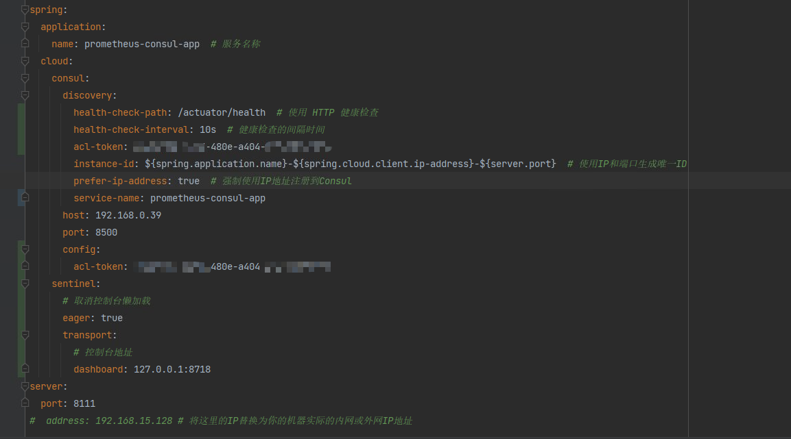

prometheus&consul&blackboxTest
安装包地址：通过网盘分享的文件：
链接: https://pan.baidu.com/s/1iBSiZ4baGzf8KWlhdnDv0w?pwd=9i1u 提取码: 9i1u代码地址见文章末尾
虚拟机关闭防火墙：
systemctl status firewalld
systemctl stop firewalld
systemctl disable firewalld
Prometheus
启动脚本startup-prometheus
#!/bin/bash
cd `dirname $0` # 替换为 Prometheus 的实际路径
BASE_DIR=`pwd`
echo `pwd`
# 定义 Prometheus 的路径
PROMETHEUS_PATH=$BASE_DIR/prometheus # 替换为 Prometheus 的实际路径
PID_FILE=$BASE_DIR/prometheus.pid # 存储进程 ID 的文件
LOG_FILE=$BASE_DIR/logs/prometheus.log # 日志文件
CONFIG_FILE=$BASE_DIR/prometheus.yml # Prometheus 配置文件路径
DATA_DIR=$BASE_DIR/data # Prometheus 数据目录
# 检查是否已经在运行
if [ -f "$PID_FILE" ] && kill -0 $(cat "$PID_FILE") 2>/dev/null; then
echo "Prometheus is already running."
else
echo "Starting Prometheus..."
nohup $PROMETHEUS_PATH --config.file=$CONFIG_FILE --storage.tsdb.path=$DATA_DIR > $LOG_FILE 2>&1 & # 后台运行
echo $! > "$PID_FILE" # 将进程 ID 写入文件
echo "Prometheus started with PID $(cat "$PID_FILE")."
fi
终止脚本shundown-prometheus
#!/bin/bash
cd `dirname $0` # 替换为 Prometheus 的实际路径
BASE_DIR=`pwd`
PID_FILE=$BASE_DIR/prometheus.pid # 存储进程 ID 的文件
# 检查 PID 文件是否存在
if [ -f "$PID_FILE" ]; then
PID=$(cat "$PID_FILE")
if kill -0 "$PID" 2>/dev/null; then
echo "Stopping Prometheus..."
kill "$PID"
rm -f "$PID_FILE" # 删除 PID 文件
echo "Prometheus stopped."
else
echo "Prometheus is not running."
rm -f "$PID_FILE" # 删除 PID 文件
fi
else
echo "Prometheus is not running."
fi
consul
# 下载 Consul
wget https://releases.hashicorp.com/consul/1.17.2/consul_1.17.2_linux_amd64.zip
# 解压
unzip consul_1.17.2_linux_amd64.zip
# 移动到 /usr/local/bin 目录
sudo mv consul /usr/local/bin/
# 验证安装
consul version
# 启动 Consul
consul agent -dev
#在云服务器上启动了consul，但是访问不了8500端口，这里需要在服务器启动的时候，加上-client的指定
./consul agent -dev #这是最开始启动的命令 只能本机访问
#当使用下面命令的时候就可以其他机器进行访问了：
./consul agent -dev -client 0.0.0.0 -ui #外部机器就可以访问
待被发现的java程序的要求
application.yml
management:
endpoints:
web:
exposure:
include: health,info,prometheus
metrics:
export:
prometheus:
enabled: true
spring:
application:
name: prometheus-consul-app # 服务名称
cloud:
consul:
discovery:
instance-id: ${spring.application.name}-${spring.cloud.client.ip-address}-${server.port} # 使用IP和端口生成唯一ID
prefer-ip-address: true # 强制使用IP地址注册到Consul
heartbeat:
enabled: true
service-name: ${spring.application.name}
host: 192.168.15.128
port: 8500
server:
port: 8111
# address: 192.168.15.128 # 将这里的IP替换为你的机器实际的内网或外网IP地址主程序
//@EnableDiscoveryClient 自springboot2.7x以后就不用了
@EnableDiscoveryClient
@SpringBootApplication
public class PrometheusMonitoringDemoApplication {
public static void main(String[] args) {
SpringApplication.run(PrometheusMonitoringDemoApplication.class, args);
}
}pom.xml
<?xml version="1.0" encoding="UTF-8"?>
<project xmlns="http://maven.apache.org/POM/4.0.0" xmlns:xsi="http://www.w3.org/2001/XMLSchema-instance"
xsi:schemaLocation="http://maven.apache.org/POM/4.0.0 https://maven.apache.org/xsd/maven-4.0.0.xsd">
<modelVersion>4.0.0</modelVersion>
<parent>
<groupId>org.springframework.boot</groupId>
<artifactId>spring-boot-starter-parent</artifactId>
<version>2.7.4</version>
<relativePath/>
</parent>
<groupId>org.example</groupId>
<artifactId>prometheus-monitoring-demo</artifactId>
<version>0.0.1-SNAPSHOT</version>
<name>prometheus-monitoring-demo</name>
<description>prometheus-monitoring-demo</description>
<properties>
<!-- springboot和springcloud有兼容要求、springboot和micrometer有兼容要求-->
<java.version>1.8</java.version>
<micrometer.version>1.9.5</micrometer.version>
<spring-boot.version>2.7.4</spring-boot.version>
<spring-cloud.version>2021.0.5</spring-cloud.version>
</properties>
<dependencyManagement>
<dependencies>
<dependency>
<groupId>org.springframework.cloud</groupId>
<artifactId>spring-cloud-dependencies</artifactId>
<version>${spring-cloud.version}</version>
<type>pom</type>
<scope>import</scope>
</dependency>
</dependencies>
</dependencyManagement>
<dependencies>
<dependency>
<groupId>org.springframework.boot</groupId>
<artifactId>spring-boot-starter-web</artifactId>
</dependency>
<!-- 为应用程序提供了暴露管理端点的功能，这些端点包括健康检查、性能监控和指标。-->
<dependency>
<groupId>org.springframework.boot</groupId>
<artifactId>spring-boot-starter-actuator</artifactId>
</dependency>
<!-- 让应用程序通过 Micrometer 收集并格式化度量指标，以 Prometheus 可理解的方式暴露给 Prometheus。。-->
<dependency>
<groupId>io.micrometer</groupId>
<artifactId>micrometer-registry-prometheus</artifactId>
<version>${micrometer.version}</version>
</dependency>
<!-- 让Spring Boot应用程序可以通过 Consul 服务发现机制来进行注册和发现服务。-->
<dependency>
<groupId>org.springframework.cloud</groupId>
<artifactId>spring-cloud-starter-consul-discovery</artifactId>
</dependency>
</dependencies>
<build>
<plugins>
<plugin>
<groupId>org.springframework.boot</groupId>
<artifactId>spring-boot-maven-plugin</artifactId>
</plugin>
</plugins>
</build>
</project>prometheus配置
prometheus.yml
global:
scrape_interval: 5s # 默认抓取间隔
scrape_configs:
- job_name: 'prometheus-consul-app'
consul_sd_configs:
- server: '192.168.15.128:8500'
services: ['prometheus-consul-app']
metrics_path: '/actuator/prometheus' # Spring Boot 默认的 Prometheus 指标路径consul启动终止脚本
startup-consul.sh
#!/bin/bash
cd `dirname $0` # 替换为 consul 的实际路径
BASE_DIR=`pwd`
# 定义 Consul 的路径
CONSUL_PATH=$BASE_DIR/consul # 替换为 consul 的实际路径
PID_FILE=$BASE_DIR/consul.pid # 存储进程 ID 的文件
LOG_FILE=$BASE_DIR/logs/consul.log # 日志文件
DATA_FILE=$BASE_DIR/data
CONFIG_FILE=$BASE_DIR/consul.hcl
# 检查是否已经在运行
if [ -f "$PID_FILE" ] && kill -0 $(cat "$PID_FILE") 2>/dev/null; then
echo "Consul is already running."
else
echo "Starting Consul..."
nohup $CONSUL_PATH agent -dev -data-dir=$DATA_FILE -config-file=$CONFIG_FILE -client 0.0.0.0 -ui > $LOG_FILE 2>&1 & # 后台运行，# 此行如若不需要流控熔断功能可把【-config-file=$CONFIG_FILE 】去掉
echo $! > "$PID_FILE" # 将进程 ID 写入文件
echo "Consul started with PID $(cat "$PID_FILE")."
fishutdown-consul.sh
#!/bin/bash
cd `dirname $0` # 替换为 consul 的实际路径
BASE_DIR=`pwd`
PID_FILE=$BASE_DIR/consul.pid # 存储进程 ID 的文件
# 检查 PID 文件是否存在
if [ -f "$PID_FILE" ]; then
PID=$(cat "$PID_FILE")
if kill -0 "$PID" 2>/dev/null; then
echo "Stopping Consul..."
kill "$PID"
rm -f "$PID_FILE" # 删除 PID 文件
echo "Consul stopped."
else
echo "Consul is not running."
rm -f "$PID_FILE" # 删除 PID 文件
fi
else
echo "Consul is not running."
fi
Prometheus黑盒测试
wget https://github.com/prometheus/blackbox_exporter/releases/download/v0.23.0/blackbox_exporter-0.23.
0.linux-amd64.tar.gz
tar -xvf blackbox_exporter-0.23.0.linux-amd64.tar.gz
cd blackbox_exporter-0.23.0.linux-amd64
./blackbox_exporter
#Blackbox Exporter 将在默认的 9115 端口上运行。需要在 Prometheus 的配置文件 prometheus.yml 中添加 Blackbox Exporter 的配置，以监控指定的 IP 和端口。
在 prometheus.yml 中，添加一个新的 scrape_configs 来配置 Prometheus 通过 Blackbox Exporter 进行 TCP 探测：
- job_name: 'tcp_probes'
metrics_path: /probe # 使用 Blackbox Exporter 的探测路径
params:
module: [tcp_connect] # 指定使用 TCP 连接探测模块
static_configs:
# 添加更多要监控的服务地址
- targets: ['localhost:9115'] # 本地运行的 Blackbox Exporter
relabel_configs:
- source_labels: [__address__]
target_label: __param_target通过请求http://localhost:9115/probe?target=111.229.25.127:6379&module=tcp_connect
会获得
# HELP probe_dns_lookup_time_seconds Returns the time taken for probe dns lookup in seconds
# TYPE probe_dns_lookup_time_seconds gauge
probe_dns_lookup_time_seconds 1.0149e-05
# HELP probe_duration_seconds Returns how long the probe took to complete in seconds
# TYPE probe_duration_seconds gauge
probe_duration_seconds 0.029551479
# HELP probe_failed_due_to_regex Indicates if probe failed due to regex
# TYPE probe_failed_due_to_regex gauge
probe_failed_due_to_regex 0
# HELP probe_ip_addr_hash Specifies the hash of IP address. It's useful to detect if the IP address changes.
# TYPE probe_ip_addr_hash gauge
probe_ip_addr_hash 3.600422005e+09
# HELP probe_ip_protocol Specifies whether probe ip protocol is IP4 or IP6
# TYPE probe_ip_protocol gauge
probe_ip_protocol 4
# HELP probe_success Displays whether or not the probe was a success
# TYPE probe_success gauge
probe_success 1成功状态：probe_success 的值为 1，表明被监控的服务可达且正常运行。
探测时间：probe_duration_seconds 和 probe_dns_lookup_time_seconds 的值都相对较小，表示响应时间快，这通常是健康服务的标志。
无正则错误：probe_failed_due_to_regex 的值为 0，表明探测没有因正则表达式问题而失败。
java实现
package com.example.demo.blackboxexporter;
import java.io.BufferedReader;
import java.io.IOException;
import java.io.InputStreamReader;
import java.net.HttpURLConnection;
import java.net.URL;
public class BlackboxProbe {
private static final String PROBE_URL_TEMPLATE = "http://172.26.160.119:9115/probe?module=tcp_connect&target=%s";
public static void main(String[] args) {
try {
// 发起 HTTP GET 请求
String target = "111.229.25.127:3306";
String probeUrl = String.format(PROBE_URL_TEMPLATE, target);
HttpURLConnection connection = (HttpURLConnection) new URL(probeUrl).openConnection();
connection.setRequestMethod("GET");
// 处理响应
BufferedReader in = new BufferedReader(new InputStreamReader(connection.getInputStream()));
String inputLine;
StringBuilder response = new StringBuilder();
while ((inputLine = in.readLine()) != null) {
response.append(inputLine).append("\n");
}
in.close();
// 解析 Prometheus 格式的响应
String[] lines = response.toString().split("\n");
int probeSuccess = -1;
double probeDuration = -1;
for (String line : lines) {
if (line.startsWith("probe_success")) {
probeSuccess = Integer.parseInt(line.split(" ")[1]);
} else if (line.startsWith("probe_duration_seconds")) {
probeDuration = Double.parseDouble(line.split(" ")[1]);
}
}
// 输出结果
System.out.println("probe_success: " + probeSuccess);
System.out.println("probe_duration_seconds: " + probeDuration);
} catch (IOException e) {
e.printStackTrace();
}
}
}
blackbox_exporter启动终止脚本
startup-blackbox_exporter.sh
#!/bin/bash
cd `dirname $0`/blackbox_exporter-0.23.0.linux-amd64
BASE_DIR=`pwd`
# 定义 blackbox_exporter 的路径
BLACKBOX_EXPORTER_PATH=$BASE_DIR/blackbox_exporter # 替换为 blackbox_exporter 的实际路径
PID_FILE=$BASE_DIR/blackbox_exporter.pid # 存储进程 ID 的文件
# 检查是否已经在运行
if [ -f "$PID_FILE" ] && kill -0 $(cat "$PID_FILE") 2>/dev/null; then
echo "blackbox_exporter is already running."
else
echo "Starting blackbox_exporter..."
nohup $BLACKBOX_EXPORTER_PATH > $BASE_DIR/../logs/blackbox_exporter.log 2>&1 & # 后台运行
echo $! > "$PID_FILE" # 将进程 ID 写入文件
echo "blackbox_exporter started with PID $(cat "$PID_FILE")."
fi
shutdown-blackbox_exporter.sh
#!/bin/bash
cd `dirname $0`/blackbox_exporter-0.23.0.linux-amd64
BASE_DIR=`pwd`
PID_FILE=$BASE_DIR/blackbox_exporter.pid # 存储进程 ID 的文件
# 检查 PID 文件是否存在
if [ -f "$PID_FILE" ]; then
PID=$(cat "$PID_FILE")
if kill -0 "$PID" 2>/dev/null; then
echo "Stopping blackbox_exporter..."
kill "$PID"
rm -f "$PID_FILE" # 删除 PID 文件
echo "blackbox_exporter stopped."
else
echo "blackbox_exporter is not running."
rm -f "$PID_FILE" # 删除 PID 文件
fi
else
echo "blackbox_exporter is not running."
fi
流控和熔断
借鉴sentinel的参数设计
consul配置
启用consul的ACL
修改consul的配置文件consul.hcl
acl { enabled = true # 启用访问控制列表 default_policy = "deny" # 默认策略为拒绝 enable_token_persistence = true # 启用令牌持久性 tokens { master = "1a2b3c4d-5678-90ab-cdef-1234567890ab" # 主令牌,可由JAVA工具类UUID.randomUUID().toString();生成 } }重启consul（脚本在上）
consul acl list如果 ACL 系统启用了，你会看到相关的 ACL 配置信息。如果仍然出现错误，说明 ACL 可能没有正确启用，需检查日志或配置文件。 ### Prometheus配置修改 ```yml global: scrape_interval: 5s # 默认抓取间隔 scrape_configs: - job_name: 'prometheus-consul-app' consul_sd_configs: - server: '192.168.15.128:8500' services: ['prometheus-consul-app-demo'] token: '1a2b3c4d-5678-90ab-cdef-1234567890ab' metrics_path: '/actuator/prometheus' # Spring Boot 默认的 Prometheus 指标路径
java程序的配置
management:
endpoints:
web:
exposure:
include: health,info,prometheus
metrics:
export:
prometheus:
enabled: true
spring:
application:
name: prometheus-consul-app # 服务名称
cloud:
consul:
discovery:
health-check-path: /actuator/health # 使用 HTTP 健康检查
health-check-interval: 10s # 健康检查的间隔时间
acl-token: 1a2b3c4d-5678-90ab-cdef-1234567890ab
instance-id: ${spring.application.name}-${spring.cloud.client.ip-address}-${server.port} # 使用IP和端口生成唯一ID
prefer-ip-address: true # 强制使用IP地址注册到Consul
service-name: prometheus-consul-app-demo
host: 192.168.15.128
port: 8500
config:
acl-token: 1a2b3c4d-5678-90ab-cdef-1234567890ab
sentinel:
eager: true
transport:
dashboard: 127.0.0.1:8718
server:
port: 8111
# address: 192.168.15.128 # 将这里的IP替换为你的机器实际的内网或外网IP地址如图

被监控的java程序示例：https://gitee.com/lcdzzz/prometheus-consul-demo
获取监控指标的java程序示例：https://gitee.com/lcdzzz/client